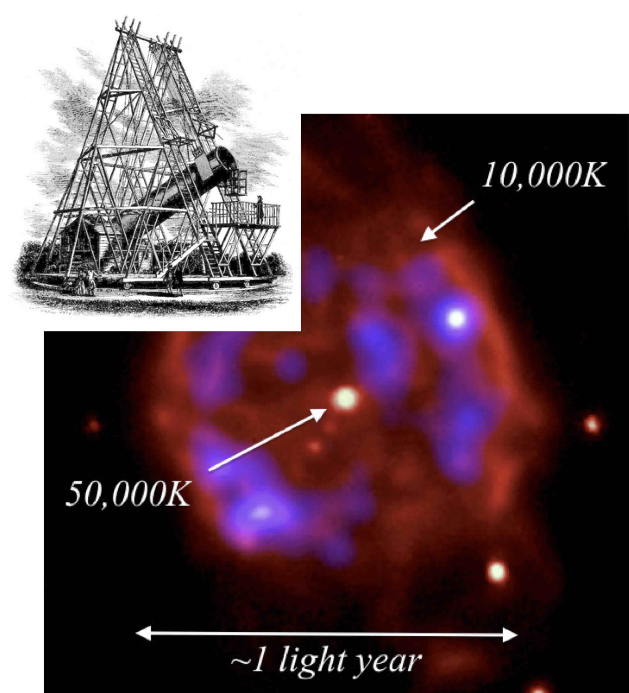

9.1 White dwarfs on the HR diagram

- White dwarfs are made from the cores of stars with ZAMS mass \(\leq 8\)M\(_{\odot}\).
- There is not enough pressure to initiate fusion beyond helium burning.
- At the end of the giant star phase it expels its surface layers as a planetary nebula, leaving the core exposed as a white dwarf star.
- There is no supernova explosion.

A historical diversion: the Herschels

William Herschel started building his own telescopes and lenses, not being satisfied with commercial ones. He built his first large telescope in 1774 and during his career he observed over 5000 nebulae. In 1781 he discovered Uranus, and after that he was elected a Fellow of the Royal Societ and started working as a Court Astronomer for George III.
William Herschel was also the first one to do (rudimentally) astronomical spectrophotometry, using prisms and instruments to measure the temperature of light diffracted at different wavelenghts. One day, while doing this, he noticed that beyond the rainbow diffracted by the prism, where seemingly there was no diffracted light, the temperature was still changing: he discovered the infrared light.
Caroline Herschel got passionate about astronomy while assisting his brother William in his observations and in creating the catalogues. She was actually the first of the Hereschels siblings to discover a nebula, even though she usually does not get enough credit for that!
At that time, in 1783, William was focused on the studies of double stars and asked Caroline to scan the sky in search of interesting objects. That is when, on the same night, she discovered both a nebula that was not in the Messier catalogue and the galaxy Messier110 (Figure 9.4), a satellite of the Andromeda Galaxy.
Caroline also realised that William’s methods of building the catalogue and searching for nebulae (organized by constellation as per Flamsteed’s catalogue), were not really efficient and precise. She created her own catalogue, organizing observed astronomical objects by north polar distance. On top of that, she revised the whole Flamsteed’s catalogue, which presented some errors, and published a catalogue containing an index of all the observations made by Flamsteed, a list of errata, and a list of over 560 stars that were not included until then. This work was called Catalogue of Stars, Taken from Mr. Flamsteed’s Observations Contained in the Second Volume of the Historia Coelestis, and Not Inserted in the British Catalogue. She published more astronomical catalogues during her career, and two of them are still in use today.
Caroline was also the first woman to discover a comet. She discovered eight comets during her career, and her work was internationally recognised.
She was the first female professional astronomer in England and the first woman to:
- be paid as a scientist
- hold a government position in England
- publish scientific findings in the Philosophical Transactions of the Royal Society
- be awarded a Gold Medal of the Royal Astronomical Society (1828)
- be named an Honorary Member of the Royal Astronomical Society (1835, with Mary Somerville).
On her 96th birthday (1846), the King of Prussia presented her with a Gold Medal for Science for her contributions to science.


9.2 Modeling white dwarfs
We have seen that the central pressure in a star is given by (Equation 8.3) \[ P_{\mathrm{c}}=\left(\frac{\pi}{6}\right)^{1/3}GM^{2/3}\rho^{4/3}, \tag{9.1}\] and in a stellar remnant where both electrons and protons are non-relativistic, the dominant degeneracy pressure is due to electrons, given by (Equation 8.19) \[ {P_{\mathrm{Qe}}=\frac{\beta}{2} \frac{\hbar^{2}}{m_{\mathrm{e}}}\left(\frac{\rho}{m_{\mathrm{p}}}\right)^{5/3}} \tag{9.2}\] where \(\beta\) is a dimensionless constant of order unity.
(For the idealised case used for the derivation in Chapter 8, we assumed \(\beta = 2\), then we added this factor at the end).
A stellar remnant where the self-gravity is balanced by electron degeneracy pressure is called a white dwarf.
9.2.1 White dwarf density
In Chapter 8 we found the average density of a white dwarf from its mass and volume, let’s now see how the density is related to the mass.
Equating \(P_{\mathrm{Qe}}\) and \(P_{\mathrm{c}}\), we have (solving for the density of the white dwarf \(\rho=\rho_{WD}\)) \[ \begin{aligned} \frac{\beta}{2}\frac{\hbar^{2}}{m_{\mathrm{e}}}\left(\frac{\rho}{m_{\mathrm{p}}}\right)^{5/3}&=\left(\frac{\pi}{6}\right)^{1/3}GM^{2/3}\rho^{4/3}\\ \rho^{1/3}&=\left(\frac{\pi}{6}\right)^{1/3}GM^{2/3}\frac{2}{\beta}\frac{m_{\mathrm{e}}}{\hbar^{2}}m_{\mathrm{p}}^{5/3}\\ \end{aligned} \] \[ \rho_{\mathrm{WD}}=\frac{4\pi}{3\beta^{3}}G^{3}\frac{m_{\mathrm{e}}^{3}m_{\mathrm{p}}^{5}}{\hbar^{6}}M^{2} \tag{9.3}\]
- Hence the density of a white dwarf depends on the square of its mass.
- Calculating out the constants, we find that the density of a white dwarf \(\rho_{\mathrm{WD}}\) is about \(10^{7}\) times greater than the density of water, i.e. \(\rho_{\mathrm{WD}}\approx 10^{10}\,\mathrm{kg m}^{-3}\).
- So 1 cm\(^{3}\) of white dwarf material weighs about 10 tons!
9.2.2 White dwarf radius
What is the radius of a white dwarf star? In Chapter 8 we said that this is roughly the radius of the Earth, but we did not justify this assumption. Let us now derive it, substituting the definition of density, \[ \rho=\frac{M}{\frac{4}{3}\pi R^{3}}\nonumber \tag{9.4}\] into Equation 9.3, and solving for the radius \[ \begin{aligned} \frac{M}{\frac{4}{3}\pi R^{3}}&=\frac{4\pi}{3\beta^{3}}G^{3}\frac{m_{\mathrm{e}}^{3}m_{\mathrm{p}}^{5}}{\hbar^{6}}M^{2}\nonumber\\ \frac{1}{R^{3}}&=\left(\frac{4\pi}{3}\right)^{2}\left(\frac{G}{\beta}\right)^{3}\frac{m_{\mathrm{e}}^{3}m_{\mathrm{p}}^{5}}{\hbar^{6}}M\nonumber\\ R&=\left(\left(\frac{4\pi}{3}\right)^{2}\left(\frac{G}{\beta}\right)^{3}\frac{m_{\mathrm{e}}^{3}m_{\mathrm{p}}^{5}}{\hbar^{6}}M\right)^{-1/3}\nonumber\\ \end{aligned} \] \[ R_{\mathrm{WD}}=\left(\frac{3}{4\pi}\right)^{2/3}\frac{\beta}{G}\frac{\hbar^{2}}{m_{\mathrm{e}}m_{\mathrm{p}}^{5/3}}M^{-1/3} \tag{9.5}\]
The radius of the white dwarf depends only on some universal constants and its mass, \(M\).
Note an important property - the radius is inversely proportional to the cube root of the mass: a more massive white dwarf is smaller than a less massive white dwarf!
To make the radius expression easier to use, we can multiply out the constants to give the radius of a white dwarf in metres as a function of its mass in solar masses.
\[ \begin{aligned} R_{\mathrm{WD}}&=2.986\times 10^{16}M^{-1/3}\,\mathrm{m}\nonumber\\ R_{\mathrm{WD}}&=2.986\times 10^{16}\left(\frac{M}{M_{\odot}}\right)^{-1/3}M_{\odot}^{-1/3}\,\mathrm{m}\\ R_{\mathrm{WD}}&\approx 2\times 10^{6}\left(\frac{M}{M_{\odot}}\right)^{-1/3}\,\mathrm{m} \end{aligned} \tag{9.6}\]
A white dwarf has the mass of the Sun in roughly the volume of the Earth.
9.3 Summary of white dwarf properties
- Mostly carbon, some oxygen (inert former stellar core).
- Supported by electron degeneracy pressure.
- Much leftover gravitational energy from collapse, so very hot. \(5,000 > T > 80,000\) K - glows in a range of colours.
- Very small (\(\sim 10^{6}\) m), so very dim: \(\sim 10^{-3}\) to \(10^{-4} L_{\odot}\).
- Very high density: \(\sim 10^{7}\) to \(10^{11} \mathrm{kg m}^{-3}\).
White dwarfs have no energy sources, so energy radiated to space is not replenished. White dwarfs cool down completely over very long timescales. When the white dwarf reaches ambient temperature it no longer shines, and is called a black dwarf.
9.4 Chandrasekhar mass limit

We have shown that the radius of a white dwarf (Equation 9.5 and Equation 9.6) is \(R_{\mathrm{WD}}\propto M^{-1/3}\).
- So, as \(M\) increases \(\rightarrow\) \(R\) decreases \(\rightarrow\) \(\rho\) increases \(\rightarrow\) particles confined to smaller volumes \(\rightarrow\) particle speeds increase (by Heisenberg uncertainty principle) \(\rightarrow\) particle speeds approach \(c\) \(\rightarrow\) non-relativistic particle approximation fails.
- We must consider more carefully what happens when the electrons become relativistic, and how this will affect the degeneracy pressure.
When does the non-relativistic approximation fail? When \[ \begin{aligned} v&\rightarrow c\\ p=mv&\rightarrow mc. \end{aligned} \tag{9.7}\]
We know from the Heisenberg uncertainty principle that \[ p_{x}\approx\Delta p_x\approx \frac{\hbar}{\Delta x}\approx\hbar \left(\frac{\rho}{m_{\mathrm{p}}}\right)^{1/3}. \tag{9.8}\]
So at the Chandrasekhar mass limit (the mass at which relativistic effects become relevant) \[ p\approx\hbar \left(\frac{\rho}{m_{\mathrm{p}}}\right)^{1/3}\approx m_{\mathrm{e}}c. \tag{9.9}\]
From our expression for the White Dwarf density (Equation 9.3) we can now write \[ \hbar\left(\frac{1}{m_{\mathrm{p}}}\frac{4\pi}{3\beta^{3}}G^{3}\frac{m_{\mathrm{e}}^{3}m_{\mathrm{p}}^{5}}{\hbar^{6}}M^{2}\right)^{1/3}\approx m_{\mathrm{e}}c. \tag{9.10}\]
We rearrange and solve for the stellar mass, \(M\), to give \[ \begin{aligned} \hbar^{3}\frac{1}{m_{\mathrm{p}}}\frac{4\pi}{3\beta^{3}}G^{3}\frac{m_{\mathrm{e}}^{3}m_{\mathrm{p}}^{5}}{\hbar^{6}}M^{2}&\approx m_{\mathrm{e}}^{3}c^{3}\nonumber\\ \frac{4\pi}{3\beta^{3}}G^{3}\frac{m_{\mathrm{p}}^{4}}{\hbar^{3}}M^{2}&\approx c^{3}\nonumber \end{aligned} \tag{9.11}\] \[ M_{\mathrm{Ch}}\approx\left(\frac{3}{4\pi}\right)^{1/2}\frac{1}{m_{\mathrm{p}}^{2}}\left(\frac{\beta\hbar c}{G}\right)^{3/2} \tag{9.12}\]
- \(M_{\mathrm{Ch}}\) is called the Chandrasekhar Mass Limit, and is the maximum mass that a white dwarf can be.
- Calculating out the constants, we find \(M_{\mathrm{Ch}} \approx 0.9 M_{\odot}\).
- Note a more detailed calculation gives \(M_{\mathrm{Ch}} \approx 1.44 M_{\odot}\) - this is the canonical value.
- Also notice that this limit only depends on a handful of known physical constants.
What happens above the Chandrasekhar mass limit?
9.4.1 Relativistic quantum degeneracy pressure
Electrons are relativistic, so we need to use the relativistic energy equation: \[ E^{2}=p^{2}c^{2}+m_{0}^{2}c^{4}, \tag{9.13}\] where \(E\) is the total energy of the particle, \(m_{0}\) is its rest mass, and \(p\) is now the relativistic momentum.
At high speeds (\(v\rightarrow c\)), the kinetic energy dominates over the rest-mass energy, so \[ E\approx pc\nonumber. \tag{9.14}\]
Using the general thermodynamic relation as before, we find that the quantum degeneracy pressure due to relativistic electrons is given by \[ P_{\mathrm{QeR}}\propto nE_{\mathrm{eR}}\propto\frac{\rho}{m_{\mathrm{p}}}E_{\mathrm{eR}}\propto\frac{\rho}{m_{\mathrm{p}}}pc\propto\rho^{4/3}. \tag{9.15}\]
Here \(p\propto \rho^{1/3}\) comes from the Heisenberg uncertainty principle.
Degeneracy pressure now varies with density as \(\rho^{4/3}\), not \(\rho^{5/3}\) as before.
How does this affect the pressure-density graph?
9.4.2 Pressure-density graph - extended
Let’s go back to the pressure-density graph seen in Chapter 8, Figure 8.6 and see how this changes when we consider the relativistic effects.

When the electrons become relativistic (beyond the Chandrasekar mass limit), the slope of the degeneracy pressure curve changes from \(5/3\) to \(4/3\).
Above the Chandrasekhar mass, the curves for the central pressure due to self-gravity, \(P_{\mathrm{c}}\), and the relativistic electron degeneracy pressure, \(P_{\mathrm{QeR}}\), are parallel. Therefore, these curves will no longer intersect.
So above \(M_{\mathrm{Ch}}\), there is no value of \(R\) for which \(P_{\mathrm{QeR}}\) balances \(P_{\mathrm{c}}\). No equilibrium is possible, and so the stellar remnant will continue to contract under its own gravity.
It will continue to shrink past the conditions for a white dwarf until some pressure source other than electron degeneracy pressure can counteract the self-gravity.
- This pressure source is neutron degeneracy pressure.
- It too is overcome above the Tolman-Oppenheimer-Volkoff limit - see Chapter 10.
9.5 Observational Properties of White Dwarfs
9.5.1 Do white dwarfs actually exist?
- Yes, we can see them.
- Although very faint, they can be observed directly with a telescope
- We can use our knowledge from SP1 (Chapters 1 to 6) to infer the physical properties in the same way we did for main sequence stars.
Measuring the amount of light we receive from a white dwarf gives us its apparent magnitude, \(m\). If we can determine the distance, \(d\), to the star (by parallax etc), we can then work out its absolute magnitude, \(M\), using the distance modulus formula (Equation 1.14):
\[ M=m+5-5\log_{10}d. \tag{9.16}\]
The absolute magnitude then gives us the star’s luminosity, \(L\), from Pogson’s equation (Equation 1.9): \[ M-M_{\odot}=-2.5\log_{10}\left(\frac{L}{L_{\odot}}\right) \tag{9.17}\]
If we examine the spectrum of the light we receive from the star (and assume it emits like a blackbody), we can determine the temperature of the white dwarf using Wien’s Displacement Law (Equation 1.19): \[ \lambda_{\mathrm{max}}T=b\hspace{1cm}b=2.898\times 10^{- 3}\,\mathrm{m K}. \tag{9.18}\]
If we have \(L\) and \(T\), we can then obtain the radius of the star, \(R\), using the Stefan-Boltzmann law (Equation 1.24): \[ L=4\pi R^{2}\sigma T^{4}. \tag{9.19}\]
If the star is in a binary system, we can also work out its mass from observations of its orbital motion.
We can then determine the mean stellar density, and whether the white dwarf stars we observe follow our derived \(R \propto M^{-1/3}\) relation.
9.5.2 What do the observations tell us?
9.5.2.1 Example: Sirius B
Take as an example the most famous white dwarf, Sirius B (Figure 9.8), the binary companion of Sirius A.
| Observed Properties | value | note |
|---|---|---|
| m | 8.44 | apparent magnitude |
| d | 2.64 pc | distance (via parallax) |
| T | 25200 K | Temperature (via Wien’s law) |
- The orbital period is 50.09 years, and system is a visual binary, so orbital parameters can be observed directly: orbital separation ranges between \(8\)–\(32\) AU; ratio of the distances of each star from the centre-of-mass \(r_{1}/r_{2} = 0.466\).
- Binary observations give a mass \(0.98 M_{\odot} = 1.95\times 10^{30} \mathrm{kg}\).
- It was realised in 1915 that this is a hot blue-white star. Initially this was thought to be “absurd”.
9.5.3 Exercise
Calculate the absolute magnitude \(M\), luminosity \(L\), radius \(R\) and density \(\rho\) of Sirius B, using the information and values listed above.
Solution
Using these values and the equations listed in the previous paragraph, we can find: \[ \begin{aligned} M&=11.18\nonumber\\ L&=0.023L_{\odot}\nonumber\\ R&=0.008R_{\odot}=5.7\times 10^{6}\,\mathrm{m}\nonumber\\ \rho&=2.5\times 10^{9}\,\mathrm{kg}\,\mathrm{m}^{-3}\nonumber \end{aligned} \]
- Hence Sirius B is about the size (\(\sim 10^{6}\) m), density (\(\sim 10^{9}\mathrm{kg\, m}^{-3}\)), and temperature (\(>10,000\) K) we expect for a white dwarf.
9.5.3.1 Another example: 40 Eridani B

The first white dwarf to be observed, by William Herschel in 1783, was 40 Eridani B.
These are its properties: \[ \begin{aligned} L&=0.013L_{\odot},\hspace{0.2cm}R=0.014R_{\odot}\nonumber\\ M&=0.5M_{\odot},\hspace{0.2cm}T=16,500\,\mathrm{K}\nonumber \end{aligned} \tag{9.20}\]
Let us compare this with the observational properties of Sirius B.
Taking mass and radius ratios with Sirius B, we find \[ \frac{R_{1}}{R_{2}}=\left(\frac{M_{1}}{M_{2}}\right)^{-0.61} \tag{9.21}\]
Theoretically, the index should be \(-1/3=-0.33\), so the agreement is not too bad (and the sign is correct!). Observations of other white dwarfs broadly confirm the relationship (but with large uncertainties).
9.6 Accretion
Stellar remnants in close binary systems may gravitationally attract material away from their companion stars. This material flows onto the surface of the remnant in a process called accretion.

Consider the gravitational potential in a binary system. The region of space around a star in which material is gravitationally bound to that star is called its Roche Lobe.
In a binary system, these touch at the system’s Lagrange point where the gravitational effect of each star exactly balances (Figure 9.10)
Suppose that one member of the binary system is a compact object (e.g. a white dwarf), and that the other member is large enough (e.g. a giant star) or close enough that it completely fills its own Roche Lobe, as shown in Figure 9.11.
Matter will “spill across” from the companion star’s Roche Lobe at the Lagrange point, stream into the white dwarf’s Roche Lobe and fall towards the white dwarf, as represented in Figure 9.12.

Since the whole system is rotating (as the stars orbit around each other), the flowing stream of matter possesses angluar momentum.
Therefore, it doesn’t fall directly down onto the white dwarf, but misses the surface and swings around it, forming a spiral of in-falling matter.
- Particles feed down into the orbital plane from above and below, so collisions between particles cancel out the component of momentum perpendicular to the orbital plane (see Figure 9.13).
- However, the particles are streaming parallel to the orbital plane (flowing from one star to the other), so the component of momentum parallel to the orbital plane is conserved.
- The net effect is that the spiraling flow flattens itself into a thin accretion disc in the plane of the orbit (c.f. Solar System Physics, see example in Figure 9.14).
- Collisions between particles in the accretion disc cause friction, which heats up the gas and makes it glow. The glowing accretion disc can be observed telescopically.

9.6.1 Example system: Mira

This system contains a giant star in a ~400 year orbit with a white dwarf and lies at a distance of about 90 parsecs.
9.6.2 Energy source for this emission
Release of gravitational potential energy during the in-fall.
By a similar argument to the one we used to calculate energy release in a supernova (see Chapter 7), we can see that the gravitational potential energy released by a mass \(m\) falling onto a body of mass \(M\), radius \(R\), from a height \(\gg R\) is \[ E\approx\frac{GMm}{R} \tag{9.22}\]
The accretion luminosity is then given by \[ L_{\mathrm{acc}}=\frac{dE}{dt}=\frac{GM}{R}\frac{dm}{dt}=\frac{GM}{R}\dot{m}, \tag{9.23}\] where \(\dot{m}\) is the mass accretion rate (kg s\(^{-1}\)).
If we assume the accretion disc radiates like a blackbody, we can relate the disc accretion luminosity to the disc temperature \(T_{\mathrm{d}}\) using the Stefan-Boltzmann law (Equation 1.24): \[ L_{\mathrm{acc}}=A\sigma T^{4}_{\mathrm{d}}. \tag{9.24}\]
Note that in the formula above, since the emitting area \(A\) is both sides of a flat disc, rather than the usual sphere, the emitting area for an accretion disc of radius \(R_{\mathrm{d}}\) is \[ A=2\pi R^{2}_{\mathrm{d}}. \tag{9.25}\]
Equating our expressions for luminosity, Equation 9.23 and Equation 9.24, we find \[ L_{\mathrm{acc}}=\frac{GM\dot{m}}{R}=2\pi R_{\mathrm{d}}^{2}\sigma T^{4}_{\mathrm{d}}. \tag{9.26}\]
Accretion disks are usually observed in X-rays, giving \(T_{\mathrm{d}}\approx 10^{6}\) K. Orbital measurements of the binary system can give \(M\), and thus \(R\) from the mass-radius relationship. If the disc can be resolved, \(R_{\mathrm{d}}\) can be determined, thus allowing us to calculate \(\dot{m}\) from measurements of \(L_{\mathrm{acc}}\).
9.6.3 Novae

Accretion transfers hydrogen on to the white dwarf. This mass “piles up’’ on the surface, and the weight of this overlying material causes the local density to increase. Eventually the density (and therefore pressure and temperature) becomes sufficiently high for H-fusion to begin.
This fusion releases a large amount of energy, causing a sudden bright outburst of emission - a nova. This thermonuclear explosion temporarily sweeps away the accretion disk: when it builds up again sufficiently, another nova occurs.
9.6.4 Supernovae
- If the mass of an accreting carbon white dwarf approaches \(M_{\mathrm{Ch}}\), the density within the star becomes sufficiently high that rapid carbon fusion can begin throughout the entire star - a carbon detonation supernova (Type 1a).
- This is probably sufficiently violent that it disrupts the entire star, gravitationally unbinding it and blowing it apart: a stable neutron star probably never gets a chance to form.